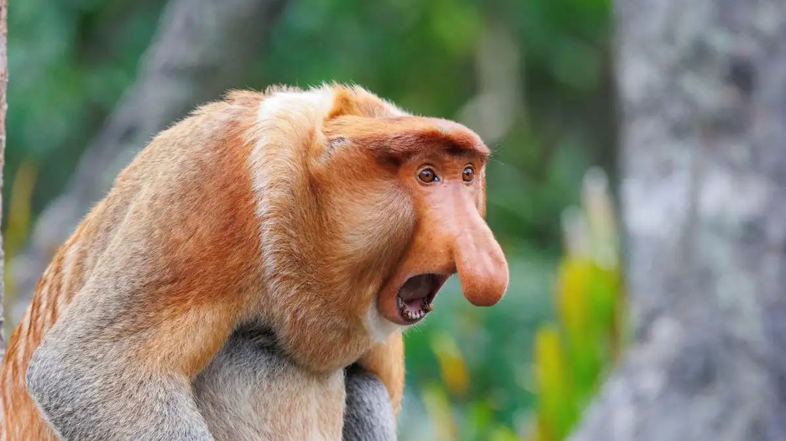
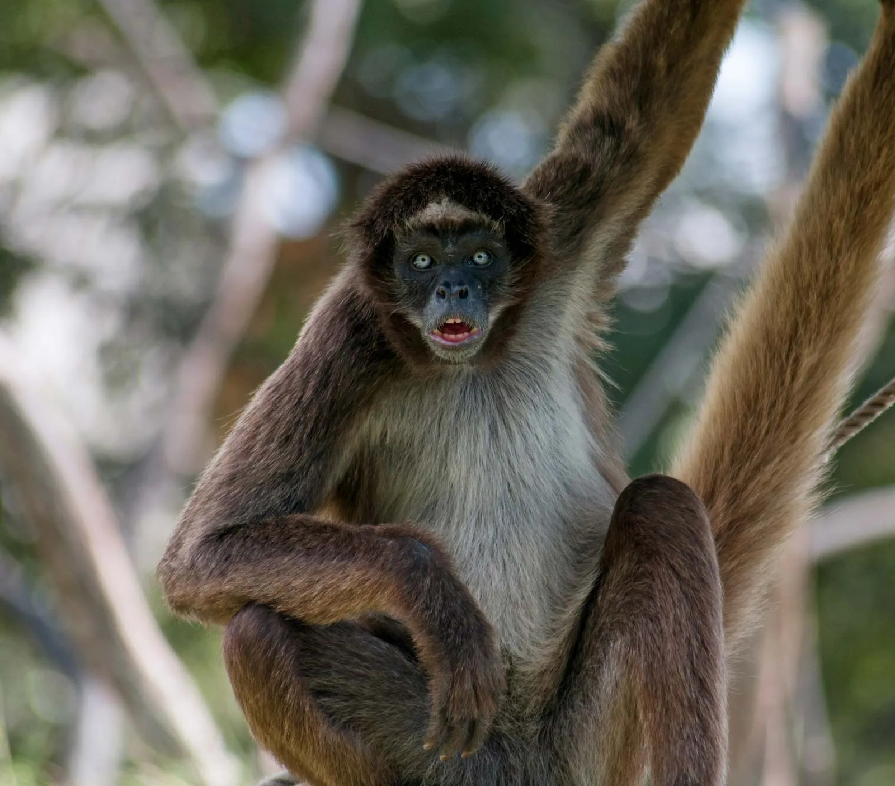
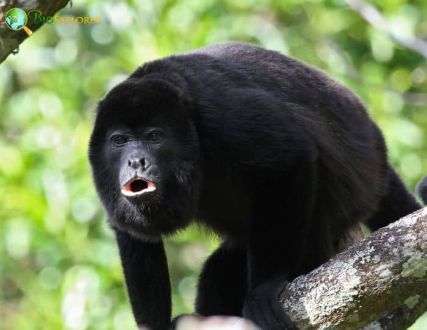
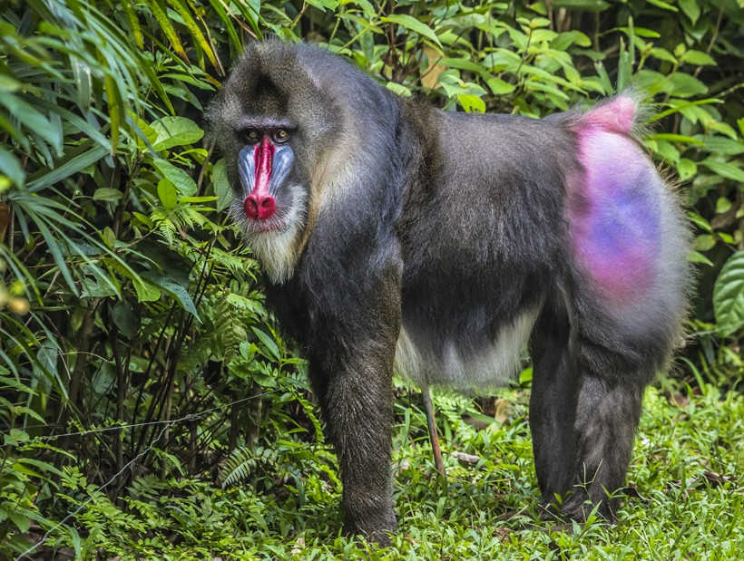
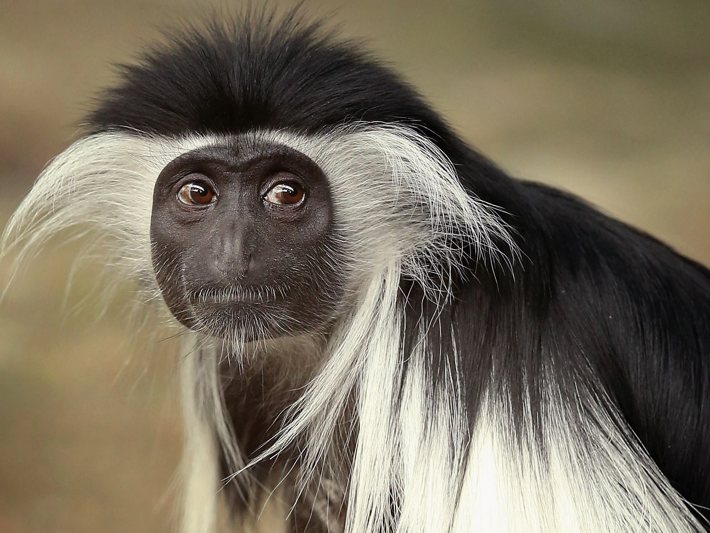

Proboscis monkey
The proboscis monkey is a large, uniquely distinctive primate native to the mangrove forests, swamps, and riverine habitats of Borneo in Southeast Asia. It is best known for its unusually large, pendulous nose, especially in males, which can reach up to 10 centimeters in length. This prominent nose is believed to play a role in attracting mates, amplifying vocalizations, and signaling social status within groups. Adult males typically weigh between 16-22 kilograms, while females are smaller, averaging 7-12 kilograms. Their reddish-brown coat contrasts with their lighter underparts, and their long, partially webbed feet and hands make them excellent swimmers, a rare trait among primates. Proboscis monkeys are primarily folivorous, feeding on leaves, seeds, and unripe fruits, with occasional consumption of insects. They live in multi-male, multi-female groups or in all-male bachelor groups, and exhibit strong social hierarchies. Communication involves honks, grunts, and other vocalizations that can travel across rivers and dense vegetation. Unfortunately, habitat destruction from logging and palm oil plantations, combined with hunting pressures, has led to their classification as endangered. Conservation efforts focus on protecting their mangrove and riverine habitats while monitoring population health. Their iconic appearance, specialized diet, and semi-aquatic lifestyle make proboscis monkeys one of the most unusual and charismatic primates in the world.
TopSpider monkey
Spider monkeys are agile, long-limbed primates found throughout Central and South American tropical forests. Named for their spider-like appearance, their elongated limbs and prehensile tails allow them to swing gracefully through the forest canopy with remarkable speed and precision, a locomotion method called brachiation. Their prehensile tail is especially remarkable, functioning almost like a fifth limb, complete with a sensitive tactile pad at the tip for grasping branches. Spider monkeys are primarily frugivorous, relying heavily on ripe fruits, but they also consume leaves, flowers, and seeds. They live in highly social, fission-fusion societies, meaning large groups frequently split into smaller subgroups to forage, then reunite later. Adult spider monkeys usually weigh between 6-9 kilograms and have slender bodies covered in black, brown, or reddish fur. They communicate through vocalizations, body postures, and facial expressions, signaling alarm, play, or social interaction. Their intelligence and problem-solving skills are notable, and they exhibit behaviors such as tool use and cooperative grooming. Habitat loss due to deforestation, hunting, and the pet trade has made many spider monkey species vulnerable or endangered. Conservation efforts emphasize protecting continuous forest habitats, creating wildlife corridors, and promoting sustainable land-use practices. Their acrobatic movements, social complexity, and expressive faces make spider monkeys one of the most fascinating primates in the Neotropics.
TopAmazon black howler monkey
The Amazon black howler monkey, also known as the black howler, is a large New World primate native to the forests of South America, particularly the Amazon Basin and surrounding regions. These monkeys are famous for their deep, resonant howls, which can carry for up to three kilometers through dense forests. These vocalizations help establish territory boundaries, coordinate group movements, and maintain social cohesion. Black howlers are among the heaviest and most robust of the howler monkey species, with adult males weighing up to 10 kilograms, slightly smaller than females. Their black fur, combined with a prehensile tail and strong limbs, makes them adept at navigating the canopy. Their diet consists primarily of leaves, fruits, flowers, and nuts, making them primarily folivorous but also opportunistically frugivorous. They typically live in small, cohesive groups ranging from 6-15 individuals, with a dominant male leading the group. Social bonds are reinforced through grooming and vocal interactions. Amazon black howlers are relatively sedentary compared to other primates, conserving energy to digest their leafy diet. Threats include deforestation, hunting, and habitat fragmentation, which have caused local population declines. Despite this, their adaptability to secondary forests has helped some populations persist. Their iconic, thunderous calls, gentle demeanor, and strong family bonds make the black howler a distinctive and easily recognizable primate of South America's tropical forests.
TopMandrill monkey
The mandrill is a large and visually striking primate native to the rainforests of central West Africa, particularly Gabon, Cameroon, and Congo. It is famous for its vivid facial coloration: bright blue ridges flanking a red nose, complemented by red and blue rump skin, especially pronounced in adult males. These colors signal social status, health, and reproductive fitness. Mandrills are among the largest monkeys, with adult males weighing up to 35 kilograms and females about half that weight. Their diet is omnivorous, consisting of fruits, seeds, leaves, insects, and occasionally small vertebrates. Mandrills live in highly social and complex groups called “hordes,” which can number over 100 individuals, though they forage in smaller subgroups during the day. Social hierarchy is critical, with dominant males controlling access to females and leading group movements. Communication includes vocalizations, facial expressions, and body postures, such as the intimidating “yawn” to show canine teeth. Mandrills are terrestrial but also climb trees for foraging and sleeping. Despite their popularity in zoos and cultural awareness, they face threats from hunting for bushmeat and habitat destruction, making them vulnerable in the wild. Their incredible coloration, complex social behavior, and combination of intelligence and physical strength make mandrills one of the most spectacular and fascinating monkeys on Earth.
TopAngola colobus monkey
The Angola colobus, or black-and-white colobus monkey, is an elegant primate native to the forests and woodlands of central and eastern Africa, including Angola, Kenya, and Tanzania. Its most striking feature is its long, flowing black fur contrasted with white facial markings, a white tail tip, and white fringes on the shoulders and sides, giving it a tuxedo-like appearance. Adults typically weigh between 9-14 kilograms, with males slightly larger than females. Angola colobus monkeys are predominantly folivorous, feeding on leaves, seeds, and fruits, and they have specialized multi-chambered stomachs to ferment tough plant material efficiently. They live in social groups ranging from 3-15 individuals, often consisting of one dominant male, several females, and their offspring. Communication involves soft vocalizations, alarm calls, and visual cues like tail movements and body posture. These monkeys are primarily arboreal, rarely descending to the ground, and are adept at leaping between tree branches. Predators include large birds of prey, leopards, and humans in some areas. Habitat destruction and hunting for their striking fur threaten some populations. Angola colobus monkeys play a crucial ecological role by aiding seed dispersal and maintaining forest health. Their striking coloration, gentle social structure, and graceful arboreal movements make them a visually captivating and ecologically important primate.
Top